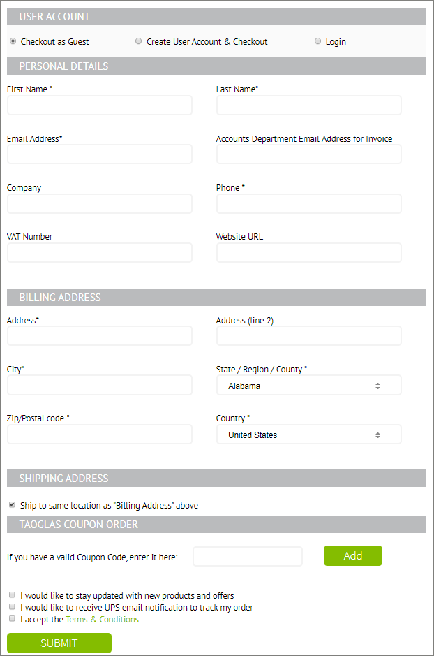
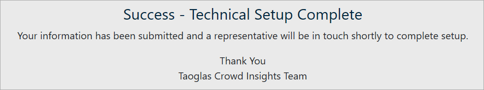
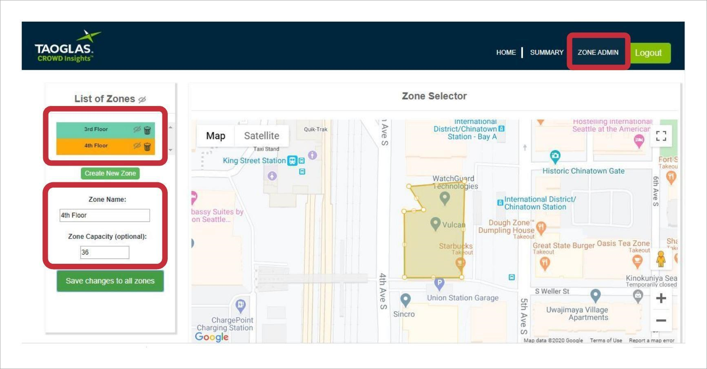

Deployment Overview
WatchGuard Wi-Fi Cloud integrates with Taoglas Crowd Insights to provide reporting analytics for WatchGuard Wi-Fi Cloud access point deployments.
Integration Summary
These service and hardware were used to test this integration:
- Taoglas Crowd Insights account
- WatchGuard Access Points
- WatchGuard Wi-Fi Cloud account
- Floor plan image in JPG or PNG format
- The MAC address of the access points
Test Topology
Configure Taoglas Crowd Insights
To configure Taoglas Crowd Insights to integrate with WatchGuard Wi-Fi Cloud, you must have an active subscription for Taoglas Crowd Insights.
- Go to the Taoglas Crowd Insight Management web site.
- Click Buy Now.
- Choose the number of access points.
- Verify the subscription you selected, then click CHECKOUT.
- Type your account information. You can log in to a current account, create a new user account, or checkout as guest.
For this example integration, we use a guest account.

- If you are a WatchGuard reseller, add your discount coupon code and click Add.
- Select the I accept the Terms & Conditions check box.
- Click SUBMIT.
- Verify your billing address, then click Pay for Subscription.
- Type your payment card details, then click COMPLETE SUBSCRIPTION.
After you complete your subscription, a confirmation message with your subscription details appears.
- You will receive a confirmation email at the email address you specified during the setup.
- Click Complete Technical Setup.
The Customer Information page appears.
- From the Timezone drop-down list, select the time zone for your location.
- In the GPS of Venue text box, type your GPS location coordinates.
You can use Google Maps to find the GPS coordinates of your location.
Type your address in Google Maps, then right-click the red location dot, then select What's Here?.
Copy the GPS formatted location of the building. In this example, the GPS coordinates of the WatchGuard corporate headquarters are 47.598027, -122.328664.
- Type your End Customer Contact Names, CROWD Insights Admin User, and Reseller Contact Names.
- Complete the remaining fields in the customer information page, then click Submit.
A confirmation message appears.

- After you submit your customer information, Taoglas support will configure your customer account.
Taoglas will send this information in an email that is required to integrate with WatchGuard Wi-Fi Cloud.
- JSON formatted server URL
- Send interval
- Authorization key
Configure the WatchGuard Wi-Fi Cloud Analytics Integration
These instructions describe how to configure WatchGuard Wi-Fi Cloud for integration with Taoglas Crowd Insights. Your WatchGuard access points must already be installed and configured. For detailed information on WatchGuard Wi-Fi Cloud access point deployment, see the Getting Started Guide.
- Log in to your WatchGuard Wi-Fi Cloud account.
- Open Discover.
- Open the Navigator, then select the location where to apply the Taoglas Crowd Insights integration information.
- Select Configure > WiFi.
- Select Devices Settings.
- Select the Analytics Integration with Third-Party Server check box.
- Select JSON as the Visibility Analytics Format.
- In the Server URL text box, type the server URL provided by Taoglas support.
- Set the Send Interval to 60 seconds.
- Select Key as the Authorization method.
- In the Key text box, type the key provided by Taoglas support.
- ClickSave.
Get the MAC Address for the Access Points in Wi-Fi Cloud
- In WatchGuard Wi-Fi Cloud, open Discover.
- Open the Navigator, then select the location of the access points that will send data to Taoglas.
-
Select Monitor > WiFi > Access Points.
In the list of activated access points, you can view the MAC address for each access point.
- Record the MAC address of each access point for the specified location.
Configure Taoglas Floor Plans to Place Access Points
Taoglas support will provide you with a setup URL to identify the GPS location of your access points in our building. The format of this URL is similar to: https://crowdinsights.taoglas.com/placement/watchguard/<unique_identifier_code>/
- To upload a floor plan and place your access points, log in to your Taoglas account.
The Taoglas map for the location configured in setup appears.
- Click Add Floorplan.
- Click Choose File to select a floor plan image for upload.
The floor plan image must be in JPG or PNG format and less than 4MB in size.
- In the Floorplan ID text box, type a description of the floor plan.
- Click Upload.
- To add and position the floor plan, in the Position Floorplan section, click the name of the floor plan.

- Position your mouse pointer over the image.
- Use the arrows, hand, and Zoom buttons to position the image correctly.
- When finished, click Save.
You can add multiple floor plans if required. - In the Display/Edit AP section, select the name of the floor plan to add access points.
- Select Add AP.
- A red location dot appears on the map to represent the access point. Move the access point to the appropriate location on the floor plan.
- Add the access point ID. The access point ID is the MAC address of the device. For example, 00:aa:00:bb:00:cc
- When finished, clickSave.
The access point dot turns green. - Repeat these steps to add all your access points with their corresponding MAC address to each floor plan as required.
Test the Integration
You can test the WatchGuard Wi-Fi Cloud and Taoglas Crowd Insights integration from the Taoglas web site.
- Go to https://crowdinsights.taoglas.com/ and log in with the credentials sent to you by Taoglas support.
- It might take up to 5 minutes before data appears. Contact the Taoglas support email address for WatchGuard deployments (wgsupport@taoglas.com) if data does not appear.
Live View
Use the Live View map of the location to view current activity.
Create Zones
Use zones to create targeted areas with capacity limits, alert notifications, and reports. To create one or more zones, click the Zone Admin tab.

Data Summary
Click the Summary tab to view a data summary that includes Hourly Visitors, Dwell Time Visits, Weekly Trend Visitors, Weekly Trend Dwell Time, and Top Zones.